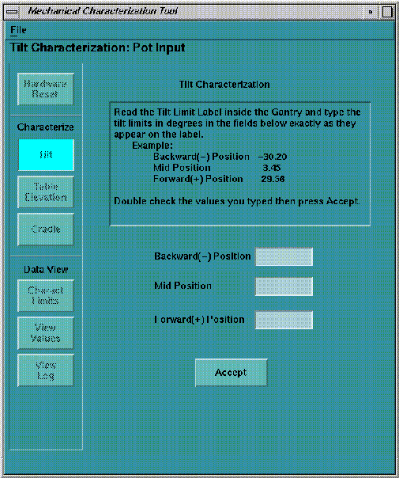
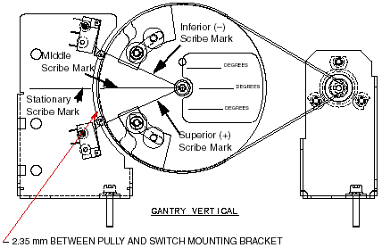

Proprietary to General Electric
Direction 5114043-800, Rev# 9
LightSpeed 3.X Service Methods (Advanced)
Proprietary to General Electric |
| Required Persons | Preliminary Reqs | Procedure | Finalization |
|---|---|---|---|
| 1 |
| NOTE: | Ignore any gantry display readings. There is a calculated offset for zero degrees. Enter the values on the provided sticker only. Do not attempt to adjust the large cam wheel. It is factory set. |
Select [TILT] and [CHARACTERIZE] in sequence, then follow the Tilt Characterization instructions displayed on the monitor screen. See Illustration 1
Illustration 1: Gantry Tilt Characterization

| NOTE: | All voltages are measured at the tilt potentiometer (see Step 2.c during the characterization activity. |
Calculate voltages.
Read the three scribe line degree positions and the voltage value printed on the rating plate. Make note of these (write them down).
Do the math:
Top Characterization Line Degree Value = TCL
Middle Characterization Line Degree Value = MCL
Bottom Characterization Line Degree Value = BCL
Middle Characterization Voltage = MCV
Nominal Pot Voltage Change per Degree = 0.0833 V
Middle Characterization Nominal Voltage = MCL * 0.0833 + 5
0 Degree Voltage = Middle Characterization Nominal Voltage - MCV + 5
Top Characterization Voltage = 0.0833 * TCL + 0 Degree Voltage
Bottom Characterization Voltage = 0.0833 * BCL + 0 Degree Voltage
Round results to the nearest one-hundredth of a volt.
The tilt rating plate lists the following values:
TCL = -22.67 degrees
MCL = 2.49 degrees
BCL = 27.65 degrees
Middle Characterization Voltage = 5.21 Volts
Calculations are as follow:
Middle Characterization Nominal Voltage = 2.49 * 0.0833 + 5 = 5.207417 V
0 Degree Voltage = 5.207417 - 5.21 + 5 = 4.997417 V
Top Characterization Voltage = 0.0833 * -22.67 + 4.997417 = 3.109006 V
Bottom Characterization Voltage = 0.0833 * 27.65 + 4.997417 = 7.300662 V
Final Results:
MCL Voltage = 5.21 V
TCL Voltage = 3.11 V
BCL Voltage = 7.30 V
Set the Tilt Pot
Tilt gantry to align, as precisely as possible, the center (Zero Scribe Mark) scribe lines (see Illustration 2).
Illustration 2: Tilt Characterization Scribe Marks

For coarse adjustment, loosen tilt pot mounting bracket and relieve tension on the timing belt.
Connect DVM minus lead to CCW (center post) of the potentiometer and DVM plus to S (closest outside post) of the potentiometer.
Rotate small pulley until the DVM reads the same value as that printed on the tilt rating plate (Middle Characterization Voltage).
Restore belt tension with the tilt pot-mounting bracket and secure (refer to Tilt Pot and Belt Adjustment located inTilt Pot Assembly Adjustments - Angle, Limit procedure for details on how to properly tension the tilt belt).
For final adjustment, loosen tilt pot clamps and rotate the body of the pot until the DVM reads the same as the value on the tilt rating plate (Middle Characterization Voltage).
Tighten pot clamps and verify DVM reading.
Leave the DVM connected for the remainder of the procedure.
Perform Tilt Characterization
Launch the characterization process on the console (see
Ignore gantry display readings during the process.
Enter the three angles in their respective places.
Press [CONTINUE] .
When the console asks you to drive the gantry to the value entered for the top characterization line, drive the gantry backward until your Volt Meter reads the value you calculated for the TCL voltage.
Press [OK] .
When the console asks you to drive the gantry to the middle characterization line, drive the gantry forward until your Volt Meter reads the value printed on the tilt rating plate (MCL voltage).
Press [OK] .
When the console asks you to drive the gantry to the Bottom Characterization Line, drive the gantry forward until your Volt Meter reads the value you calculated for the BCL voltage.
Press [OK] .
Click [SAVE AND CONTINUE] .
Perform a System Reset.
Reference the table.
Perform +/- 30 Tilt Limits check located in Tilt Pot Assembly Adjustments - Angle, Limitprocedure.